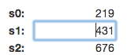
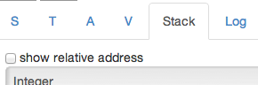
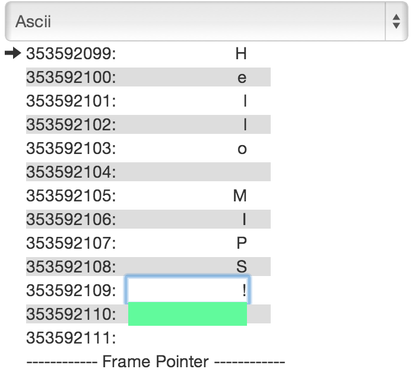

Eric Wooley, Ortal Yahdav
WeMIPS Documentation (MIPS Emulator)
Auto switch register/stack/log tabs
Show stack byte as number/ascii/binary
Mips Arithmetic Instructions
Mips Logical Instructions
Mips Branch and Jump Instructions
Mips Memory Access Instructions
Mips Comparison Instructions
Note: Instructions marked in red are experimental. These instructions should work, but haven't been thoroughly tested,
The syscalls supported are similar to the ones which the MARS emulator uses: http://courses.missouristate.edu/kenvollmar/mars/help/syscallhelp.html
Description | $v0 code | Arguments | Return Value |
Print Integer | 1 | $a0 = integer to print | |
Print String | 4 | $a0 = stack address of null-terminated string to print to console | |
Read Integer | 5 | $v0 = contains integer read | |
Read String | 8 | $a0 = address of input buffer $a1 = maximum number of characters to read (this will be one less than the allowed string since it needs space for the null terminator) | $v0 = contains the length of the input string |
Confirm Dialog | 50 | $a0 = address of null-terminated string that is the message to user | $a0 contains value of user-chosen option 0: OK 1: Cancel |
Input Dialog Int | 51 | $a0 = address of null-terminated string that is the message to user | $a0 contains int read $a1 contains status value 0: OK status -1: input data cannot be correctly parsed -2: Cancel was chosen -3: OK was chosen but no data had been input into field |
Input Dialog String | 54 | $a0 = address of null-terminated string that is the message to user $a1 = address of input buffer $a2 = maximum number of characters to read | $a1 contains status value 0: OK status. Buffer contains the input string. -2: Cancel was chosen. No change to buffer. -3: OK was chosen but no data had been input into field. No change to buffer. -4: length of the input string exceeded the specified maximum. Buffer contains the maximum allowable input string plus a terminating null. |
Alert | 55 | $a0 = address of null-terminated string that is the message to user | |
Alert Int | 56 | $a0 = address of null-terminated string that is an information-type message to user $a1 = int value to display in string form after the first string | |
Alert String | 59 | $a0 = address of null-terminated string that is an information-type message to user $a1 = address of null-terminated string to display after the first string | |
Generate Save String Code | 60 | $a0 = stack address of null-terminated string to generate code for | |
Binary -> Decimal | 61 | $a0 = stack address of binary string | |
Decimal -> Binary | 62 | $a0 = decimal number to convert $a1 = number of chars to output $a2 = size of each block to output |
There are 2 ways to process your code: Stepping, and Running.
You can type a line number and press Go to jump to a specific line of code. This will become the next line the mips engine will run.

Tap the Show/Hide Demos button to reveal the list of built-in demos. Tap a demo (e.g. Hello World) to replace the existing MIPS code with the predefined MIPS code for that demo. Then press run (or step) to watch it execute. Most of them are self explanatory, or have comments that explain how they work.

With this feature enabled, whenever a register (or stack) is modified, the tab will automatically switch the corresponding tab so that you can see the relevant change. In the case where multiple things are modified at once, the last change will take precedence.
Sometimes it is useful to see the actual bits that compose a byte, or to see the corresponding ASCII character that is stored in the stack. You can toggle between seeing any of these three values for a corresponding address in the stack.

Up top we can toggle which registers are currently visible (S, T, A, or V registers). Underneath that, we can see a register's current value. Registers are initially populated with junk data until an instruction modifies them. In this screenshot, we can see that the $s0 register currently has the value 170. A register is composed of 32 bits, and can therefore hold 232 different values.

You can click a register's value and overwrite its contents with whatever you want.
The stack is byte-addressable, and is currently the only place to store anything of great length. Each time you start the emulator, the frame pointer will be initialized to a random address less than 2^32, in order to simulate the fact that when you first run your program, the frame pointer may be at any given value.

The black arrow is used to show where $sp is currently pointing to.

You can click show relative address, in order to show relative addresses from the frame pointer rather than having to look at large numbers.

You can change a value in the stack by clicking it to edit it. You can also view it in several modes, as an integer, in binary, and it’s ascii representation (‘None’ if no ascii character is available). Viewing the stack in a different mode doesn’t mean you can’t edit it. You can edit it in binary mode to save a binary representation, as you could with integers and ascii.